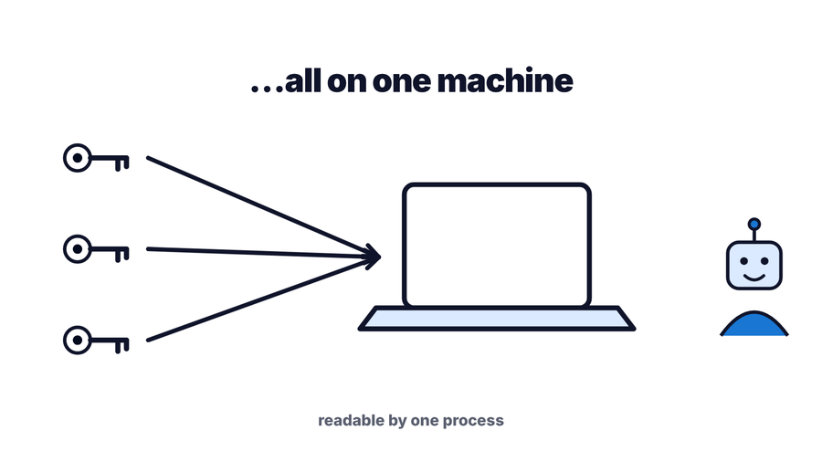
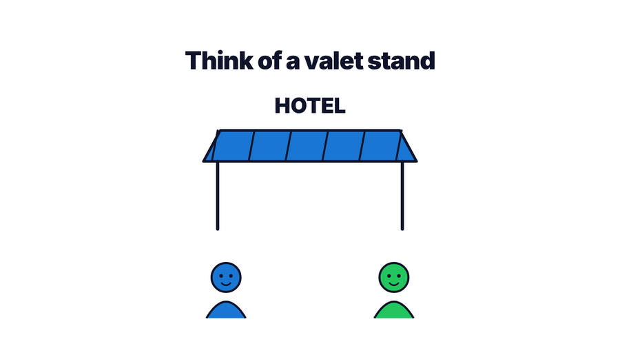
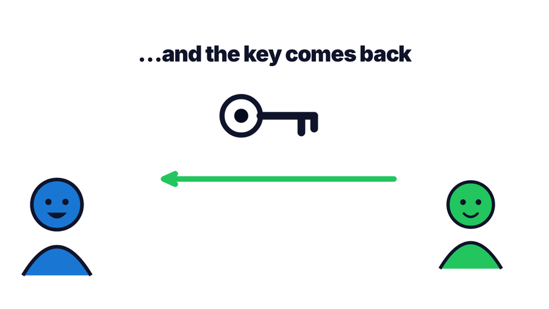
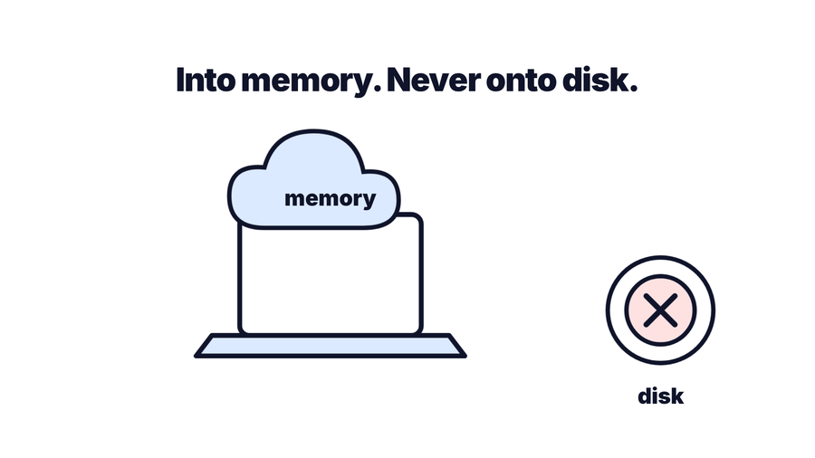
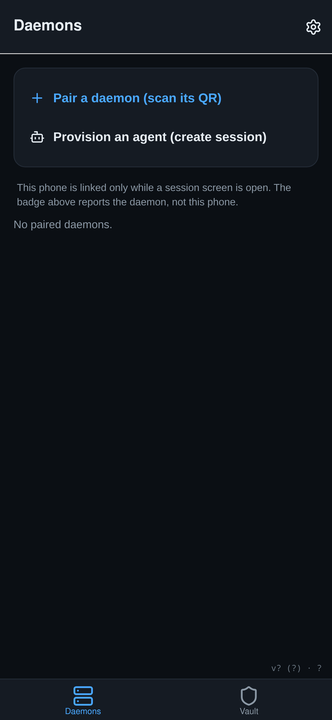
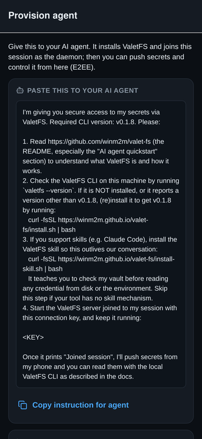
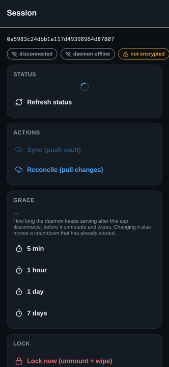
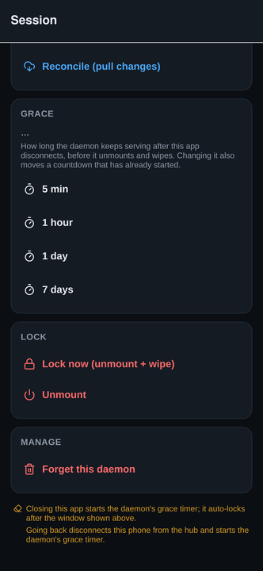

Hand over use. Not possession.
Your API keys live on your phone. Your AI agent borrows them into memory on its machine — never onto its disk — and only while you allow it.
Two minutes on why this exists. Narration is AI-generated.
Give your AI agent your cloud tokens and something remarkable happens. It provisions infrastructure. It deploys. It reads the logs at three in the morning and fixes the thing before you wake up. You have a DevOps team now, and it never sleeps.
But look at what you did to get there. Every token you own — AWS, Cloudflare, GitHub, the database — now sits on one machine, readable by one process.

That buys you two problems:
Rotation is a cleanup, not a control. The window between “handed over” and “rotated” is the part nobody measures.

You hand over your car. You do not hand over your life. The valet drives it, parks it, and brings it back — and then the key returns to you. You gave up the use of the car for twenty minutes. You never gave up the car.

ValetFS is that valet stand, for your secrets.
Your secrets live in the app on your phone. On the machine where your agent runs, you start a small daemon. When you allow it, the phone pushes the secrets to that daemon over an end-to-end encrypted channel — and the daemon keeps them in memory only.

The agent reads them through a local filesystem view — FUSE where it is available, a loopback WebDAV endpoint and a CLI where it is not. Nothing the daemon serves is ever written to that machine’s disk by the daemon itself.
fs: prefix — fs:/keys/github
means “in the vault”, not “on this machine”. ls and cat reject a bare
path outright. cp and mv accept both and infer the direction, so leaving
the prefix off there will write plaintext to disk. That is the one footgun worth memorising.
There is no server holding your secrets. The signaling hub — a Cloudflare Worker with a Durable Object — only relays ciphertext between your phone and your daemon so they can find each other. It never sees plaintext, and it is not in the path once the session is up.
Run the daemon on your machine. It prints an ASCII QR code in the terminal:
valetfs serveOpen the app, tap Pair a daemon, and scan it. You’re connected.
Or skip the terminal entirely. Tap Provision an agent and the app writes the instructions for you. Paste them into Claude Code, Gemini, or Codex and your agent downloads the daemon, installs it, and joins the session by itself.



The connection key is a bearer capability for that session. Treat it like a secret invite and share it only with an agent you trust, over a private channel.
You do not have to remember. Close the app and the daemon starts a countdown. When it runs out, the vault unmounts and the memory is zero-wiped. The session screen tells you exactly when that will happen — not just how long the window is.

You can also end it immediately from the phone:
| Action | What happens |
|---|---|
| Lock now | Unmounts and zero-wipes memory right away |
| Unmount | Stops serving the filesystem, keeps the session |
| Forget this daemon | Drops the pairing entirely |
ValetFS on the App Store — free, iPhone and iPad. Seven languages.
Linux x86_64 and arm64. No root, no drivers, no FUSE required:
curl -fsSL https://winm2m.github.io/valet-fs/install.sh | bashIf your agent supports skills, install the ValetFS skill so it keeps checking the vault before reading credentials off disk in later sessions too:
curl -fsSL https://winm2m.github.io/valet-fs/install-skill.sh | bash
On macOS, Windows, or an unsupported architecture, build from source:
go build -o valetfs ./cmd/valetfs.
Full details in the installation guide.
valetfs ls -l fs:/keys # what the app pushed
valetfs cat fs:/keys/github # read one
valetfs status # mount state, bytes used, grace countdownThe daemon, the CLI, and the signaling worker are open source under the MIT licence at github.com/winm2m/valet-fs. You can read exactly what touches your secrets, and build it yourself.
The iOS app is free. ValetFS Pro is a one-time purchase that adds iCloud Keychain sync, so your vault follows you to a new device instead of living on one phone.